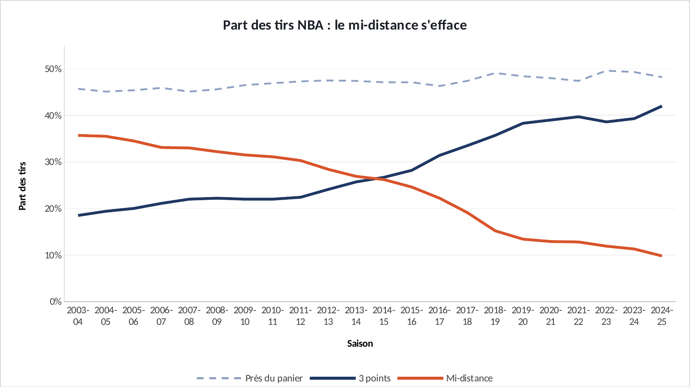
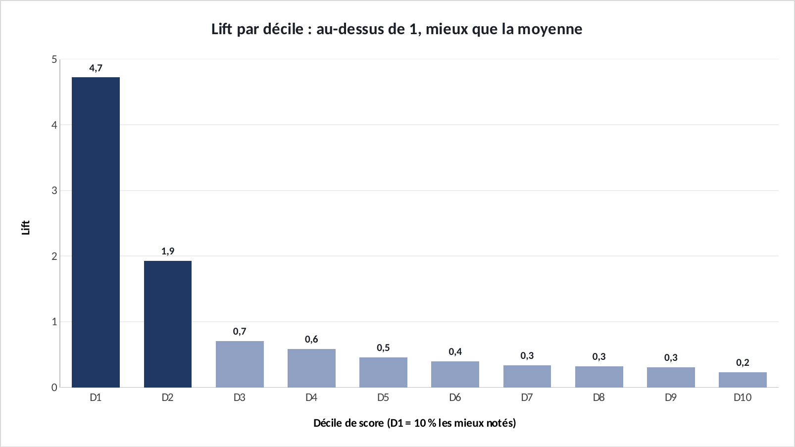
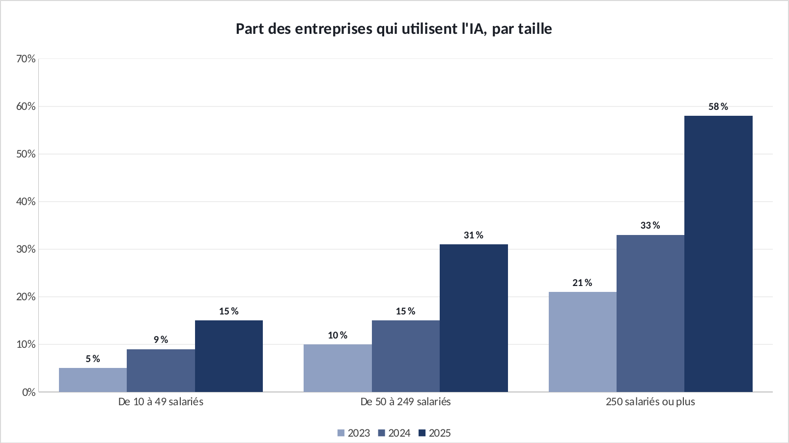
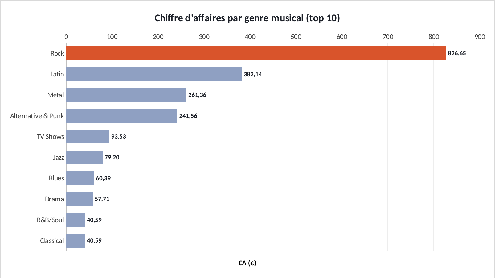
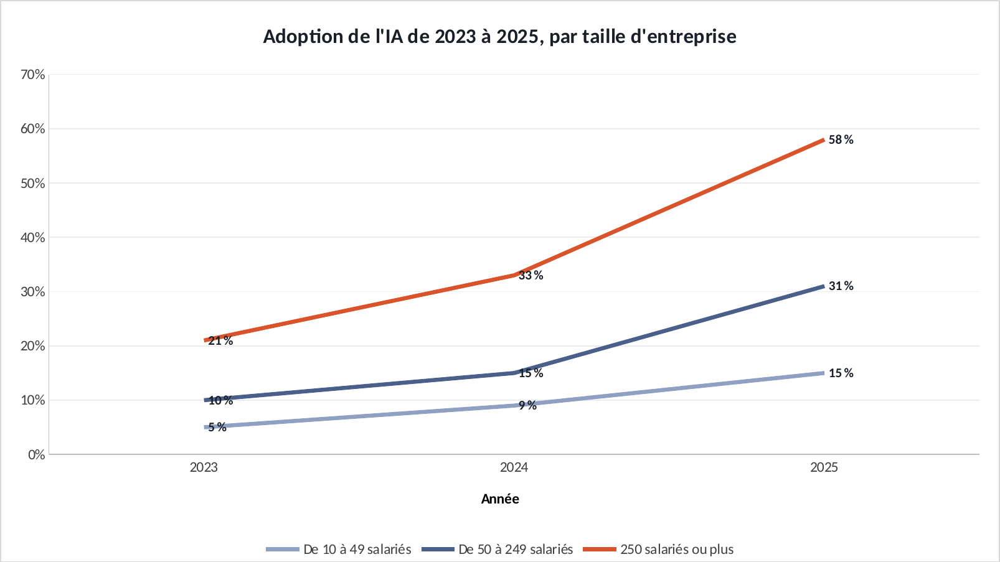
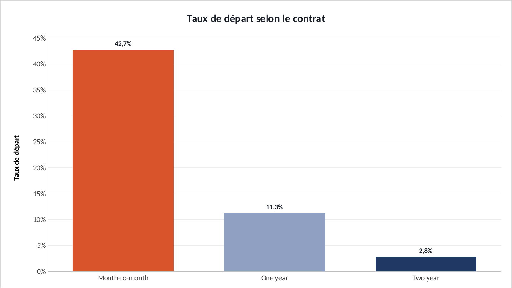
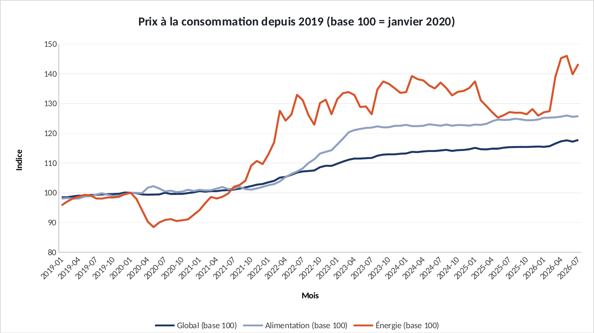
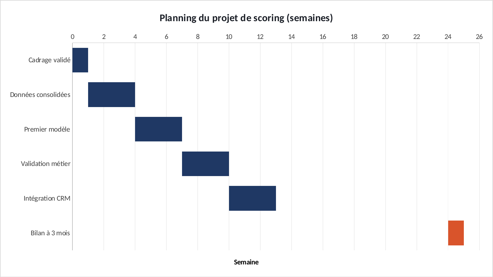
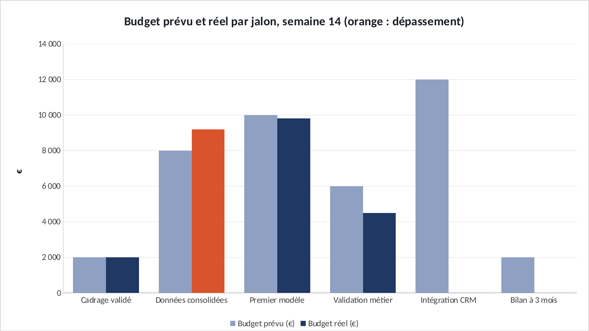

01 · Projets
Chaque projet part d'une question précise.
Tout ce qui suit, je l'ai fait seul, pour apprendre, pas pour un client. En haut, deux études complètes, avec les fichiers Excel pour les refaire. En dessous, les projets plus courts : chaque dépôt explique la méthode, et surtout ce qui ne marche pas.

Nouveau · simulation dans Excel
69 %
Le bookmaker gagne toujours. Même au MMA.
Le MMA et les paris sportifs ont explosé en même temps en France. Sur les cotes de 6 916 combats UFC et 10 000 parieurs simulés, 69 % finissent perdants. Et les 31 % restants sont ceux qu'on entend.
Excel · Power BI · tuto inclusLire l'étude

Étude complète
36 % → 10 %
Le tir que la NBA a arrêté de financer.
4,4 millions de tirs, 22 saisons. Le mi-distance a toujours rapporté moins qu'un 3 points, et les équipes ont mis près de dix ans à couper le budget. Une étude d'allocation de ressources, au basket comme en marketing.
Excel · Power BI · tuto inclusLire l'étude
Les autres projets

×5
Quels prospects B2B appeler en premier ?
Les 10 % les mieux notés par le modèle convertissent près de 5 fois plus que la moyenne. Et j'ai viré une variable qui aurait rendu le score plus beau… mais faux.
Python (modèle) · ExcelCode & méthode

16 → 43 pts
Les PME françaises rattrapent-elles les grands groupes sur l'IA ?
Non. Entre 2023 et 2025, l'écart d'adoption est passé de 16 à 43 points. Il se creuse au lieu de se refermer.
Excel · Looker StudioCode & méthode

35 %
D'où vient l'argent d'un magasin de musique ?
Du Rock, à 35 % du chiffre d'affaires à lui tout seul. Trouvé en 5 requêtes SQL, des agrégations de base aux fonctions fenêtre.
SQL · ExcelCode & méthode

0 clic
Et si le reporting mensuel se faisait tout seul ?
Le pipeline se relance chaque mois et vérifie le nombre de lignes avant d'enregistrer quoi que ce soit. Il préfère planter que laisser passer un fichier faux.
GitHub Actions · Power QueryCode & méthode

×15
Pourquoi les clients d'un opérateur télécom s'en vont ?
Sur 7 000 clients, ceux sans engagement résilient 15 fois plus que ceux engagés sur 2 ans. Le type de contrat explique presque tout l'écart, le reste, c'est surtout du bruit.
Excel · tableau croisé dynamiqueCode & méthode

#1
Qu'est-ce qui a vraiment augmenté depuis 2019 ?
L'inflation poste par poste, alimentation, énergie. Mon tout premier projet data. Je le laisse là exprès : on voit d'où je pars.
Excel · données InseeCode & méthode

J-0
Qu'est-ce qu'on pose avant la première ligne de code ?
Une note de cadrage pour un projet de scoring IA (cas fictif) : objectifs mesurables, périmètre, jalons, et les risques, RGPD compris.
Gestion de projet · Gantt ExcelLe document

S14
Le projet est cadré. Il dérape où ?
La suite du projet d'à côté : à la semaine 14 sur 24, le tableau de suivi repère un jalon en retard et isole un dépassement de 15 % sur un seul lot.
Suivi de projet · ExcelCode & méthode
02 · Méthode
Quatre règles que je ne lâche pas.
Pas des valeurs écrites pour faire joli : chacune vient d'un projet au-dessus.
« Tout le monde a un plan, jusqu'au premier coup. »
Un résultat moins beau mais vrai, toujours.
Dans le scoring B2B, une variable gonflait les performances du modèle. Je l'ai sortie. Un chiffre flatteur qui s'écroule en production, ça ne sert à personne.
Une erreur silencieuse est pire qu'un plantage.
Mon pipeline de reporting refuse d'enregistrer s'il manque des lignes. Je préfère qu'on m'appelle parce que ça a planté que parce que le chiffre était faux.
On cadre avant de coder.
Qui décide, ce qu'on mesure, ce qui peut mal tourner. Ma note de cadrage existe avant le code, et le suivi continue après.
Je montre mes limites avant qu'on me les trouve.
Dans l'étude sur les paris, un résultat m'arrangeait moins : les très gros favoris rapportent un peu. Je l'ai gardé, avec sa marge d'erreur. Et chaque étude finit par une section « ce qu'elle ne dit pas ».
03 · Hors écran
Ce que je fais quand je ne fais pas de data.
Muscu, sports de combat, basket, natation, échecs. Même là, je finis toujours par regarder les chiffres.
Sports de combat
66 %
des combats UFC sont gagnés par le favori des bookmakers. Calculé moi-même sur 6 916 combats → l'étude.
Un plan qui ne survit pas au premier échange, ce n'était pas un plan.
Basket
÷3,6
La part des tirs à mi-distance en NBA entre 2004 et 2025. Calculé moi-même sur 4,4 millions de tirs → l'étude.
La preuve qu'une analyse peut changer tout un sport.
Muscu
6 à 7 M
d'abonnés en salle en France, selon les sources, qui ne sont pas d'accord entre elles. Je le note : c'est un réflexe.
Ce que j'aime à la salle : la progression se mesure, semaine après semaine.
Culture
0
C'est le nombre de fois où Peter Drucker a écrit « ce qui se mesure se gère ». On lui attribue partout. Il ne l'a jamais dit.
Je me cultive sur à peu près tout. Et je vérifie mes sources.
Échecs
10¹²⁰
parties d'échecs possibles, selon l'estimation de Claude Shannon (1950). Plus que d'atomes dans l'univers observable, environ 10⁸⁰.
Personne ne calcule tout. On choisit ce qu'on regarde : c'est ça, analyser.
Événementiel
2 pays
France et Belgique : des soirées musicales et culturelles organisées avec Knight Event, un collectif étudiant (2023-2025).
Un événement, c'est un projet dont on ne peut pas décaler la date.
« Absorbe ce qui est utile, rejette ce qui ne l'est pas, ajoute ce qui t'est propre. »
04 · Chiffres
Des chiffres réels, parfois absurdes.
De la génétique, de la pub, des maths et même Nicolas Cage. Chaque carte renvoie à sa source. Cliquez pour la retourner.
05 · Certifications
Deux certifications, passées en conditions d'examen.
Pour chacune, ce qu'elle couvre et ce qu'elle prouve concrètement.
PL-300
Microsoft
Power BI Data Analyst Associate
Préparer et nettoyer des données, les modéliser, construire des rapports Power BI, puis les partager et les sécuriser. Un examen Microsoft, chronométré.
Ce que ça prouve : je livre un tableau de bord de bout en bout.
PIX 5
Service public
Pix, niveau 5
La certification publique française des compétences numériques : chercher et trier l'information, créer des contenus, collaborer, protéger ses données. Le niveau 5 correspond au palier « avancé ».
Ce que ça prouve : à l'aise sur tout l'environnement numérique, pas seulement la data.06 · Parcours
De l'économie à l'analyse de données.
Aujourd'hui je suis en Master Big Data & IA à l'INSEEC, certifié Power BI, et je publie ici mes études avec les fichiers Excel pour les refaire. Le reste du temps : muscu, sports de combat, basket, et des soirées que j'organise avec un collectif entre la France et la Belgique.
Ma conviction, c'est que la data et l'IA vont ensemble : des données propres et bien comprises, et l'IA pour aller plus vite. Je veux produire un travail dont je comprends chaque étape, et qui aide vraiment à décider. C'est ce que je cherche à faire en alternance, sur 12 mois, côté data ou côté projet digital. Écrivez-moi.
Ce que je cherche
- Une alternance de 12 mois, dans la famille data ou projet digital : data analyst, business analyst, BI, chargé de projet digital ou data, marketing analytics.
- Disponible tout de suite. Basé à Nanterre, mobile partout en France.
- Le détail, au fil des semaines : la page Maintenant.
Outils
Power BIPower QueryExcelSQL
PythonPandasNumPyscikit-learn
n8nIA générativeGitHub ActionsCRM
Langues
Français natif · Anglais B2+/C1
Le chemin
- 2019Bac ES, spécialité mathsLycée Maurice Delafosse, Abidjan.
- 2021-2022Équipier polyvalent, Five GuysLille. Les standards et les délais, tous les jours.
- 2022 · 3 moisStage chargé clientèle, Orange Côte d'Ivoire+15 % de satisfaction client. Mon premier impact chiffré.
- 2023Collecteur de dons, Straight Walk MarketingLille. Présenter des projets d'ONG à plus de 30 personnes par semaine.
- 2025Licence Économie & GestionUniversité de Lille. Statistiques, économétrie, calcul matriciel : on m'y a appris à me méfier d'une corrélation.
- 2025-2027Master Marketing Digital, Big Data & IAINSEEC PGE, Paris. La data, l'IA et le marketing dans le même cursus.
- Prochaine étapeVotre équipe ?12 mois d'alternance, pour passer des exercices aux vrais enjeux.
07 · À vous de jouer
Tous mes graphiques sont faits dans Excel. Refaites-les.
Chaque graphique de ce portfolio sort d'un vrai fichier Excel. Pour chacun, il y a le fichier fini, une version vide pour s'entraîner, et un tuto clic par clic. Les données sont aussi en CSV pour Power BI.
1 h 30Paris sportifs × MMAHistogramme empilé, nuage de points, barres d'erreur, 1 000 parieurs simulés (Monte-Carlo)
1 hNBA, le mi-distanceCourbes, carte de chaleur, décomposition mix / performance en SOMMEPROD
45 minChurn télécomTableau croisé dynamique, NB.SI.ENS, SI imbriqués
1 hVentes d'un magasin de musiqueRequêtes SQL dans DB Browser, puis graphiques Excel
40 minInflation et SmicRebaser à 100, référence mixte, pouvoir d'achat
20 minScoring B2BMoyenne pondérée, lift par décile
20 minIA dans les PMEHistogramme groupé, puis le même dans Looker Studio
30 minReporting automatiséPower Query : un import qui s'actualise en un clic
20 minPlanning de projetDiagramme de Gantt avec des barres empilées
30 minSuivi de projetIndicateurs NB.SI / SOMME.SI, budget prévu et réel
Un tableur qui dort dans un coin ? Parlons-en.
Une alternance, un projet, ou juste une question sur un de mes dépôts, je réponds.
alvinkouadio1@icloud.com